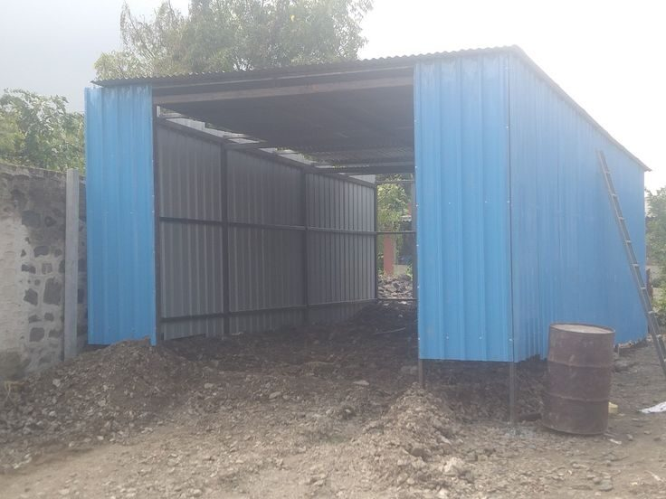
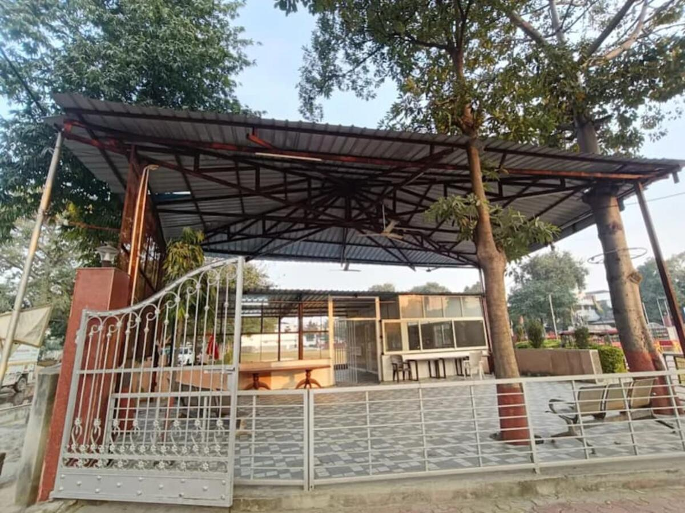
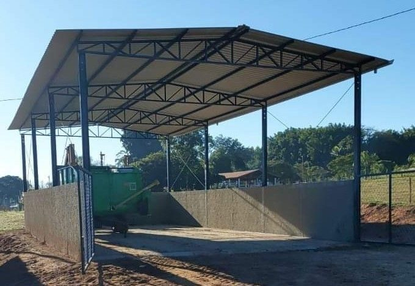
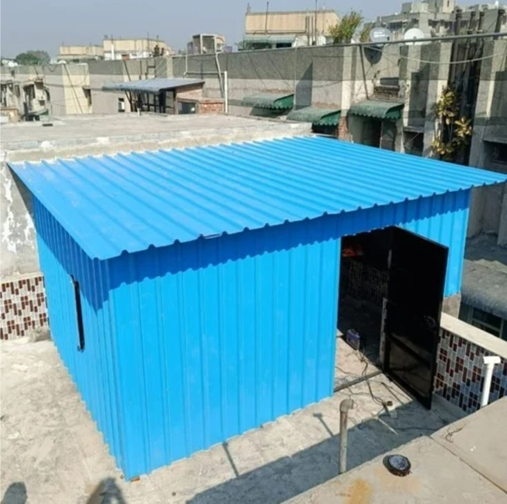
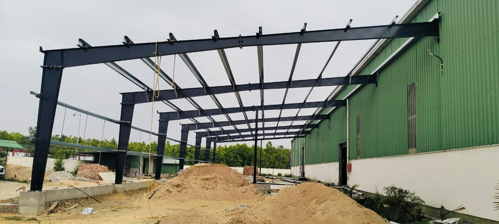

Teen Shed & Tin Shed Contractor in Najafgarh
R.R Teen Set Solution works out of Najafgarh. Parking canopies, farm and dairy sheds, godowns and rooftop sheds, surveyed, fabricated and fitted by a team that knows these plots.
Tin shed & steel structures in Najafgarh
Najafgarh is not a single-purpose industrial estate. It is a belt where villages, farms, dairy and poultry units, small workshops, godowns and fast-growing residential colonies sit side by side. That mix is why a one-size shed design rarely works here, and why we like to see the plot before we draw anything.
R.R Teen Set Solution is based in Najafgarh, so this is the area we know best: the narrow village lanes where a long truss cannot be carted in one piece, the open farm plots where wind is the main load, and the colonies where a parking shed has to look neat beside a finished house. People here often say "teen shed" or "teen set" for a tin shed, and that is exactly the work we do every day.

What gets built in and around Najafgarh
Farms, dairy & poultry
Open-sided sheds with good airflow, sloped roofs for quick drainage and sheet colours that keep heat down matter more than fancy finishes. We build them on strong, simple frames that are easy to extend when the herd or flock grows.
Godowns & small workshops
Storage and light fabrication units along Najafgarh Road and Dhansa Road usually need a clear floor, a wide shutter for pickup trucks and a roof that stays dry through the monsoon.
Homes & parking
Car-parking canopies, terrace sheds and utility covers for residential plots, finished neatly with proper edge trims so the shed adds to the house instead of spoiling it.
Why open, simple frames suit Najafgarh plots
On open plots the roof behaves like a sail. A low-slope shed with correct purlin spacing and well-anchored columns handles Delhi's pre-monsoon storms far better than a light frame copied from a drawing made for a sheltered lane. We size the footing, column section and sheet gauge for the real exposure of your plot.
For farm and dairy use we keep the eave high and the sides open so hot air leaves and animals stay cooler. For parking and godowns we add rain gutters and a small ground slope so water does not collect against the columns. Small decisions like these decide how many years a shed lasts.
Shed and steel structure rates in Najafgarh
Prices are per sq.ft before GST and cover material, fabrication and fitting. Your rate depends on span, height, sheet type and site conditions. For a quick figure on your own dimensions, try the shed cost calculator or read the tin shed price guide.
What we plan around in Najafgarh
Check the access first
Many Najafgarh lanes and farm tracks are narrow. We confirm how steel will reach the plot and cut and bolt sections to suit, instead of promising something a truck cannot deliver.
Design for wind, not just rain
Open plots catch strong pre-monsoon wind. Anchor bolts, bracing and purlin spacing are set for the exposure of your site.
Keep it cool and drained
Ridge ventilation, the right slope and gutters protect animals, stock and vehicles, and we send water away from the footing.
Leave room to grow
Farm and godown owners usually extend within a few years. We plan the frame so a new bay can be added without cutting the old one.
From first call to handover in Najafgarh
Call or WhatsApp
Tell us the plot size and what the shed is for. Because we work from Najafgarh, nearby plots are easy for us to reach for the free survey.
Survey and written quote
We measure the plot, note access and ground, and send a transparent quote within 24 hours of the survey.
Fabrication in our workshop
Frames, trusses and fittings are cut and welded under supervision and primed before they leave the workshop.
Installation and handover
Our team erects the structure, fits the sheets and checks every joint and fastener before handing over with a GST invoice.
Projects from our Delhi NCR portfolio




Photos are real projects by R.R Teen Set Solution across Delhi NCR. See more in the full projects gallery.
Areas we cover around Najafgarh
Najafgarh, Roshan Pura, Chhawla, Jharoda Kalan, Ujwa, Dhansa, Kair, Nilothi, Kakrola, Bijwasan, Uttam Nagar and the Najafgarh–Nangloi road. For larger industrial or wide-span work we also serve Dwarka and the rest of Delhi NCR.
Sheets and steel that suit Najafgarh plots
Najafgarh jobs are mostly outdoors, so the sheet and coating you pick decide how the shed looks and ages.
Colour-coated profile sheets
The usual choice for parking canopies and house-side sheds. They stay neat beside a finished home, and the colour does not need repainting every season.
Galvanised (GI) sheets
A good value pick for farm, dairy and storage sheds where looks matter less than cost. Pair them with a proper primer coat on the steel frame.
Translucent roof strips
A few daylight sheets in a workshop or godown roof save on lighting and keep the space bright, without turning it into a greenhouse.
What changes your Najafgarh quote
Two Najafgarh plots of the same size can still get different quotes. These are the things that move the price.
Span and height. A wider span or taller eaves needs heavier sections, so the rate per sq.ft rises.
Open farm plot or narrow lane. Tight lanes mean trusses are made in sections and joined on site, which adds fabrication and handling time.
Sheet and coating choice. Colour-coated sheets and extra paint coats cost more than plain GI, but last longer in outdoor farm conditions.
Foundation and flooring. Soft or filled ground may need deeper footings. We check this at the survey, not after fabrication starts.
Example only: a 20 × 30 ft parking or farm shed is 600 sq.ft. At ₹180–250 per sq.ft before GST that is roughly ₹1,08,000 to ₹1,50,000. The final figure is confirmed in writing after the survey. Use the shed cost calculator for a quick estimate.
What to keep ready for your Najafgarh site visit
A few details help us quote faster. Drawings are not needed.
Plot details. Keep ready a rough plot length and width, and a few photos of the plot or a WhatsApp location pin. Farm and village plots are easy for us to find that way.
Use and loads. Tell us whether the shed is for parking, animals, storage or a workshop, and whether it will be open on the sides.
Height and openings. Mention the height you need for tractors, vehicles or hay, and any gate that has to fit.
Access and timing. Note how a truck can enter your lane and when you want the shed ready, especially before monsoon.
Frequently asked questions — Najafgarh
Is R.R Teen Set Solution really based in Najafgarh?
Yes. Our office and workshop are in Najafgarh, which is why we know local plot conditions, site access and neighbourhood requirements so well, and why a free survey for plots in and around the area is easy for us to arrange.
What is the rate of a tin shed (teen shed) in Najafgarh?
Tin sheds start from about ₹180 per sq.ft and go up to ₹250 per sq.ft before GST, depending on span, height, sheet type and site conditions. Industrial sheds range from ₹200 to ₹300 and prefab warehouses from ₹185 to ₹280.
Can you build a shed for a dairy or poultry farm?
Yes. We build open-sided and semi-closed sheds for dairy, poultry and godown use, with ventilation, slope and drainage planned around the animals, feed and stock.
Do I need permission for a parking or terrace shed?
Rules depend on your plot, the building type and the local authority, so please confirm with your architect or the civic body. We provide a clear drawing, specification and GST invoice to support whatever documentation is needed.
How long does a small tin shed take?
For a tin shed up to 1,000 sq.ft, plan on roughly 7–12 days after approval; site access and design can move that.
Which sheet is better for a Najafgarh farm shed, GI or colour-coated?
For a working shed GI is usually enough if the frame is well primed. Choose colour-coated when the shed is visible from the house or road and you want it to look finished for years.
Can a tin shed handle strong wind on an open plot?
Yes, if the frame, purlin spacing and fasteners are designed for open ground. We add extra bracing and use the right number of fasteners instead of leaving it to guesswork.
Do you make sheds for narrow village lanes?
Yes. We fabricate in sections that can be carried through narrow lanes and weld or bolt them together on your plot.
Get a free site visit in Najafgarh
Free survey and a transparent written quote within 24 hours of the visit. Call or WhatsApp Subhash Kumar directly.